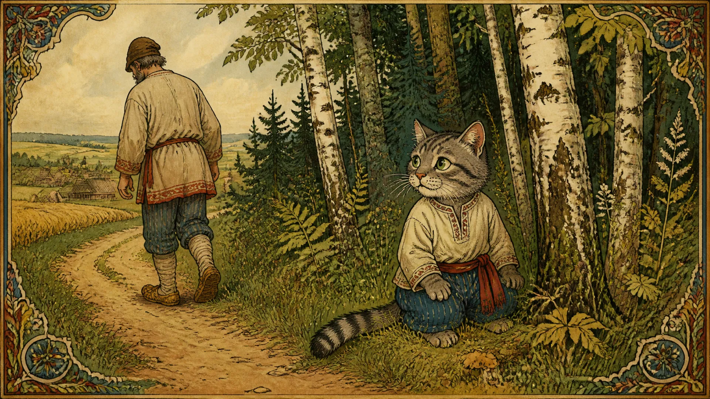
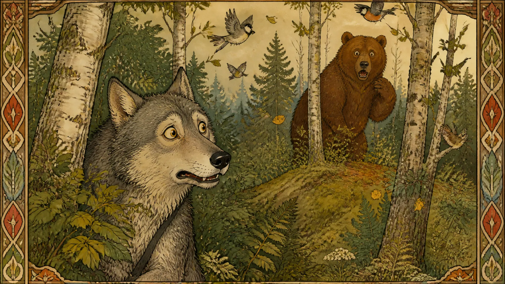
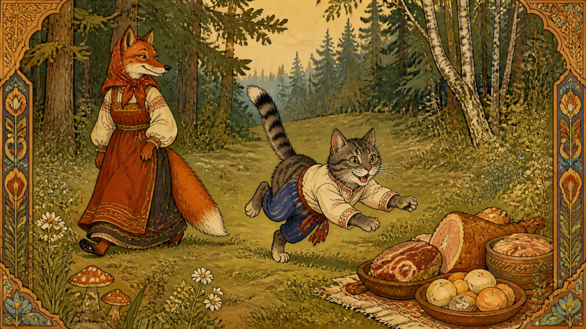
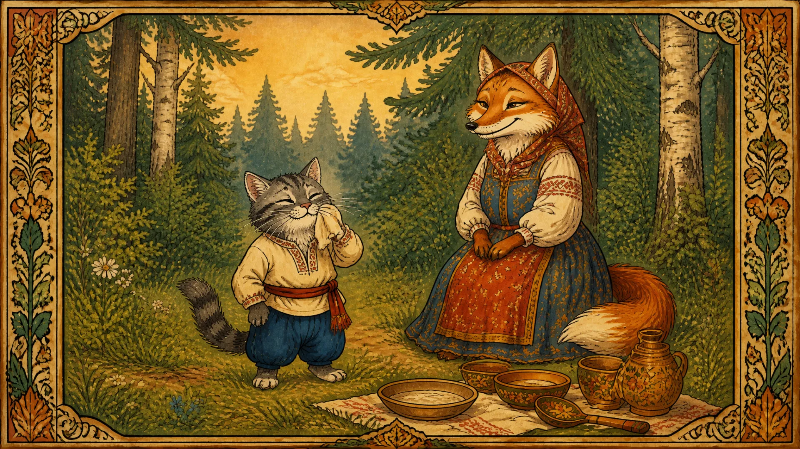

Жил у мужика кот: ловкий, усатый, да такой проказник, что хозяину с ним сладу не стало. Отнёс мужик кота в лес и оставил там: живи как знаешь.
Побродил кот по лесу, нашёл пустую избушку, залез на чердак и зажил припеваючи. Захочет есть — поймает мышку или птичку, наестся, умоется лапкой и опять на чердак спать.
Однажды встретила его лиса. Смотрит: зверь невиданный, усы длинные, глаза зелёные, шерсть дыбом.
— Кто ты таков, добрый молодец? — спрашивает лиса.
Кот выгнул спину и важно отвечает:
— Я из сибирских лесов прислан к вам большим начальником. Зовут меня Котофей Иванович.
Лиса поклонилась низко:
— Ах, Котофей Иванович, пойдём ко мне в гости. Я тебя угощу.
Пошёл кот к лисе. Усадила она его на почётное место, угощает, сама вокруг ходит, ласковые речи говорит. А потом и вовсе стала с

ним жить.
Побежал по лесу слух: у лисы новый муж, грозный Котофей Иванович. Волк услышал — удивился. Медведь услышал — ещё больше удивился.
— Надо бы посмотреть, что это за зверь, — сказал волк.
— Надо, — согласился медведь. — Только с пустыми лапами идти неловко.
Волк раздобыл барана, медведь принёс быка. Послали зайца к лисе:
— Скажи, что мы Котофею Ивановичу поклониться пришли.
Прибежал заяц к лисьей избушке, дрожит:
— Лисонька, там волк с медведем гостей ждут, подарки принесли.
— Скажи им, — отвечает лиса, — пусть подарки положат, а сами спрячутся. Котофей Иванович сердит: кто ему не понравится, того живо съест.
Испугались волк с медведем. Медведь залез на дерево, волк спрятался в кусты, только хвост торчит. Положили быка да барана на полянке и ждут.
Идут кот с лисой. Кот увидел мясо,

кинулся к нему и замурлыкал:
— Мяу! Мяу!
А волку послышалось: «Мало! Мало!» Дрожит волк: «Ему и быка с бараном мало!»
Стал кот мясо есть, а потом заметил, как в кустах волчий хвост шевелится. Прыгнул туда — думал, мышь. Волк от страха вскочил и бросился бежать. Кот сам испугался волка, метнулся на дерево. А на дереве медведь сидит! Медведь решил, что грозный Котофей Иванович прямо к нему лезет, сорвался с ветки и покатился через кусты.
Бегут волк с медведем без оглядки.
— Видал, какой страшный? — кричит волк.
— Едва спаслись! — отвечает медведь.
А кот с лисой остались на полянке. Лиса посмеивается, кот усы вытирает. С тех пор все лесные звери Котофея Ивановича боялись, а лиса жила с ним в почёте и достатке.
